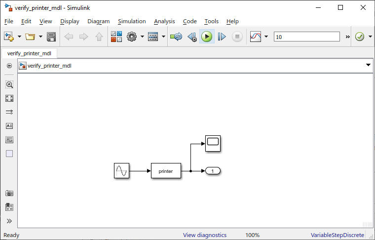
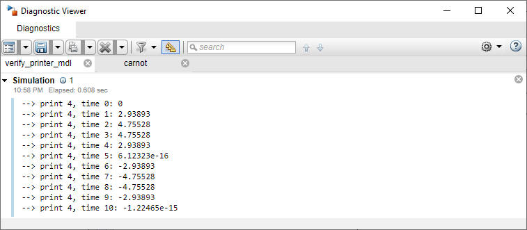
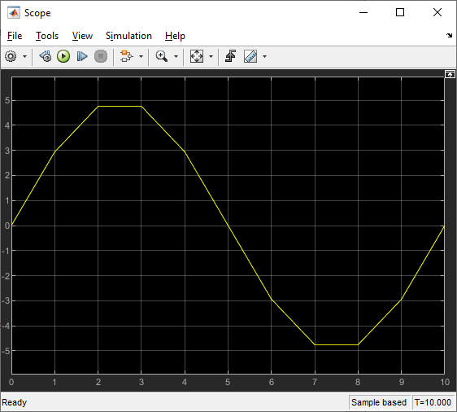

printer
Path: CARNOT/Outputs/Debugging
Purpose:
Print the input to the Simulink Diagnostic window during iterations of SIMULINK.
Description:
Print the input to the Simulink Diagnostic window during iterations of SIMULINK.
When running the model with the sim command, the output of the printer will be
sent to the Matlab Command Window. This function can be useful when writing your
own c-functions. The printer has to be integrated into the loop in the SIMULINK
model itself. It does not have to be connected to a Scope block, because the
output of the printer will appear in the command window.

Click on "View diagnostics" :

The corresponding Scope values are :

Input:
| In1 | : | data input (scalar or vector) to be printed |
Output:
| Out1 | : | same as In1 |
Examples:
Open the example explorer from the Matlab command window
ExampleBrowser
or load the examples via the CARNOT library.
Characteristics:
| Direct Feedthrough | : | Yes |
| Sample Time | : | Inherited from driving block |
| Vectorized | : | Yes |